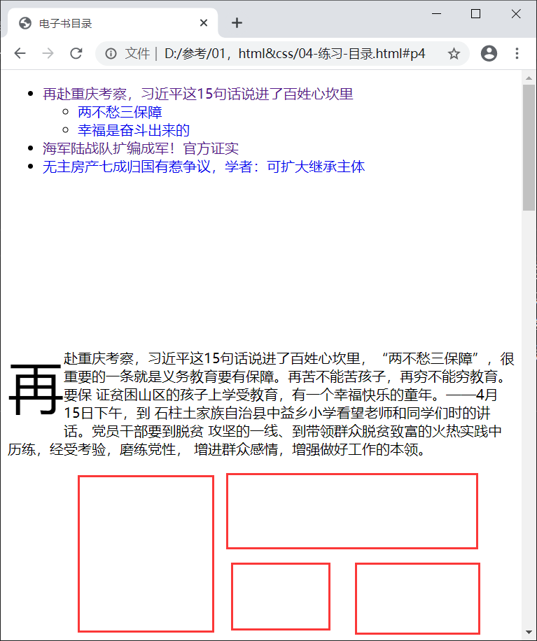

目录
再赴重庆考察，习近平这15句话说进了百姓心坎里
两不愁三保障
幸福是奋斗出来的
海军陆战队扩编成军！官方证实
无主房产七成归国有惹争议，学者：可扩大继承主体
再赴重庆考察，习近平这15句话说进了百姓心坎里
再
赴重庆考察，习近平这15句话说进了百姓心坎里，“两不愁三保障”，很 重要的一条就是义务教育要有保障。再苦不能苦孩子，再穷不能穷教育。要保 证贫困山区的孩子上学受教育，有一个幸福快乐的童年。——4月15日下午，到 石柱土家族自治县中益乡小学看望老师和同学们时的讲话。党员干部要到脱贫 攻坚的一线、到带领群众脱贫致富的火热实践中历练，经受考验，磨练党性， 增进群众感情，增强做好工作的本领。

两不愁三保障
两
不愁三保障，幸福是奋斗出来的。党的政策对老百姓好，才是真正的好。党 的各项惠民政策要落实好，乡亲们要一起奋斗，努力向前奔跑，争取早日脱贫 致富奔小康。——4月15日下午，到石柱土家族自治县中益乡华溪村村民、老党 员马培清家时的讲话，要坚决整治形式主义、官僚主义，让基层干部从繁文缛 节、文山会海、迎来送往中解脱出来。要保持惩治腐败高压态势，巩固反腐败 斗争压倒性胜利。
幸福是奋斗出来的
幸
福是奋斗出来的据“政知见”公众号（bqzhengzhiju）4月18日消息，昨天（17 日），央视曝光了前不久我国首艘国产航母第五次海试的画面。其中多个航母内 景画面首度曝光，引来军迷热捧。也在今天（18日）刷屏。也正因此，央视节目 中除了披露首艘国产航母海试的内容外，也从改革变化角度总结了海军的成果。 结尾处，央视提及“ 两栖作战力量由兵种转向全面发展，陆战队扩编成军，一系 列转型之举，让兵种搭配、职能分配更加合理”。
海军陆战队扩编成军！官方证实
海
军陆战队扩编成军！据报道，深圳罗湖区村民蔡某某，膝下无儿无女，年老后 投奔侄女，由侄女为他养老送终。蔡某某生前签订过一份拆迁赔偿协议，拥有一 套回迁房，但房子在蔡某某去世后才建成。基于老人家生前没有留下遗嘱，这套 房因此成了“无主房”。其间，侄女向法院提起诉讼，要求分配该房产的份额。深 圳中院审理后，判定侄女获得回迁房30%的房产份额，剩余70%的房产份额归国家 所有。
无主房产七成归国有惹争议，学者：可扩大继承主体
无
主房产七成归国有惹争议，学者：可扩大继承主体，安徽合肥市瑶海区水岸花、 园幼儿园后厨被曝疑似出现“变质食材”，“部分孩子曾经出现腹泻、呕吐等症状”。 对此，瑶海区教育局学社办一名工作人员回应澎湃新闻（www.thepaper.cn）称， 教育局现已介入调查，将安排学生统一体检。
返回顶部